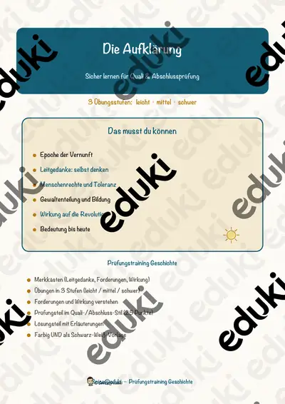
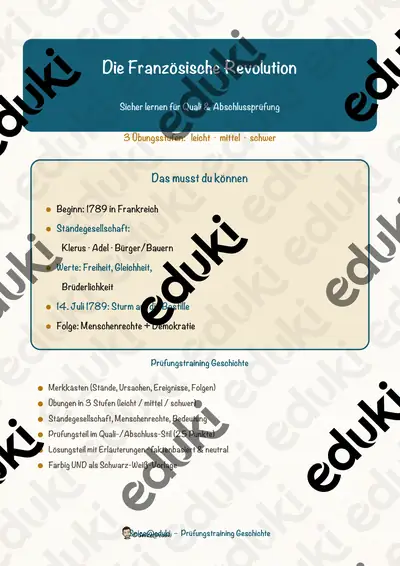

Französische Revolution und Aufklärung: Arbeitsblätter für Klasse 8–10 (Geschichte)
Aufklärung und Revolution gehören zum Kern des Geschichtsunterrichts in Klasse 8 und 9. Es geht um Ideen wie Gewaltenteilung und Menschenrechte und um deren Folgen.
Als roter Faden eignen sich Aufklärung, Absolutismus und Menschenrechte; Napoleon, Märzrevolution und Gewaltenteilung lassen sich je nach Klassenstufe zuschalten.
In den Lehrplänen der Länder ist das Thema im Fach Geschichte verankert, meist in der Sekundarstufe I (Klasse 8–10). Die Jugendlichen erklären Ursachen und Folgen der Revolution und deren Ideen.
Wer Französische Revolution und Aufklärung auf mehrere Stunden verteilt, startet mit Aufklärung, übt an Menschenrechte und schließt mit Märzrevolution ab. Alle Blätter sind kopierfertig und enthalten Lösungen für die schnelle Kontrolle. Leistungsstarke und schwächere Lesende erhalten über die Lesespurgeschichten Texte in drei Stufen.
Zum Thema finden Sie 5 Materialien, unter anderem Die Märzrevolution 1848, Die Aufklärung und Der Absolutismus, verteilt auf 2 Lesespurgeschichten und 3 Prüfungstrainings in Klasse 8. Ein Rollenspiel mit den drei Ständen vor der Revolution macht Konfliktlinien deutlich.
Das gehört zum Thema
Passende Arbeitsblätter und Materialpakete

Die Märzrevolution 1848 – Freiheit, Einheit und die Paulskirche – Lesespurgeschichte mit Rätselaufgaben (Klasse 8)

Die Französische Revolution – Lesespurgeschichte mit Rätselaufgaben (Klasse 8)

Die Aufklärung – Prüfungstraining Geschichte (Klasse 8)
Der Absolutismus – Prüfungstraining Geschichte (Klasse 8)

Die Französische Revolution – Prüfungstraining Geschichte (Klasse 8)
Häufige Fragen
Für welche Klassenstufe passen die Arbeitsblätter zu Französische Revolution und Aufklärung?
Der Schwerpunkt liegt auf Klasse 8; insgesamt deckt die Auswahl (5 Titel) Klasse 8 ab. In der Beschreibung jedes Materials steht die empfohlene Stufe.
Welche Inhalte decken die Materialien zu Französische Revolution und Aufklärung ab?
Behandelt werden unter anderem Aufklärung, Absolutismus, Menschenrechte und Napoleon. Welche Aspekte in Ihrer Klasse Vorrang haben, richtet sich nach dem Lehrplan Ihres Bundeslandes.
Wie setze ich Französische Revolution und Aufklärung im Unterricht ein?
Ein Rollenspiel mit den drei Ständen vor der Revolution macht Konfliktlinien deutlich. So entsteht aus den Blättern eine kleine Einheit, die sich auf zwei bis drei Stunden verteilen lässt.
Mehr Material nach Fach und Klasse
Verwandte Lehrplanthemen
- Industrialisierung (Geschichte, Klasse 8–10)
- Reformation und Buchdruck (Geschichte, Klasse 7–9)
- Das alte Ägypten (Geschichte, Klasse 4–7)
- Antikes Griechenland (Geschichte, Klasse 5–7)
- Mittelalter, Ritter und Burgen (Geschichte, Klasse 4–8)